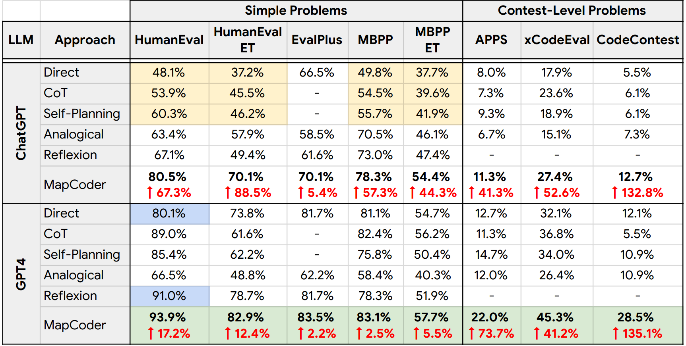

MapCoder
Multi-Agent Code Generation for Competitive Problem Solving
Md. Ashraful Islam 1, Mohammed Eunus Ali 1, Md Rizwan Parvez 2
1 Department of Computer Science and Engineering, Bangladesh University of Engineering and Technology (BUET)
2 Qatar Computing Research Institute (QCRI)
picture_as_pdf arXiv code code trophy results
Overview of MapCoder. It starts with a retrieval agent that generates relevant examples itself, followed by planning, coding, and iterative debugging agents. Our dynamic traversal (bottom) considers the confidence of the generated plans as their reward/utility scores and leverage them to guide the code generation accordingly.
Introduction
Code synthesis, which requires a deep understanding of complex natural language (NL) problem descriptions, generation of code instructions for complex algorithms and data structures, and the successful execution of comprehensive unit tests, presents a significant challenge. Thus, while large language models (LLMs) demonstrate impressive proficiency in natural language processing (NLP), their performance in code generation tasks remains limited. In this paper, we introduce a new approach to code generation tasks leveraging the multi-agent prompting that uniquely replicates the full cycle of program synthesis as observed in human developers. Our framework, MapCoder, consists of four LLM agents specifically designed to emulate the stages of this cycle: recalling relevant examples, planning, code generation, and debugging. After conducting thorough experiments, with multiple LLMs ablations, and analyses across seven challenging competitive problem-solving and program synthesis benchmarks—MapCoder showcases remarkable code generation capabilities, achieving their new state-of-the-art (pass@1) results—(HumanEval 93.9%, MBPP 83.1%, APPS 22.0%, Code-Contests 28.5%, and xCodeEval 45.3%). Moreover, our method consistently delivers superior performance across various programming languages and varying problem difficulties.
MapCoder Overview
Our goal is to develop a multi-agent code generation approach for competitive problem-solving. In order to do so, our framework, MapCoder, replicates the human programming cycle through four LLM agents - retrieval, plan, code, and debug. We devise a pipeline sequence for MapCoder, intelligently cascading the agents in a structured way and enhancing each agent's capability by augmenting in-context learning signals from previous agents in the pipeline. However, not all the agent responses/outputs are equally useful. Therefore, additionally, MapCoder features an adaptive agent traversal schema to interact among corresponding agents dynamically, iteratively enhancing the generated code by, for example, fixing bugs, while maximizing the usage of the LLM agents. Here, we first discuss the agents (as per the pipeline), their prompts, and interactions, followed by the dynamic agent traversal protocol in MapCoder towards code generation for competitive problem-solving.double_arrowRetrieval Agent
Our first agent, the Retrieval Agent, recalls past relevant problem-solving instances, akin to human memory. It finds k (user-defined) similar problems without manual crafting or external retrieval models. Instead, we leverage the LLM agent itself, instructing it to generate such problems.double_arrowPlanning Agent
The second agent, the Planning Agent, aims to create a step-by-step plan for the original problem. Our Planning Agent uses examples and their plans obtained from the retrieval agent to generate plans for the original problem. A straightforward approach would be to utilize all examples collectively to generate a single target plan. However, not all retrieved examples hold equal utility. Concatenating examples in a random order may compromise the LLM's ability to generate accurate planning.double_arrowCoding Agent
Next is the Coding Agent. It takes the problem description, and a plan from the Planning Agent as input and translates the corresponding planning into code to solve the problem. During the traversing of agents, Coding Agent takes the original problem and one particular plan from the Planning Agent, generates the code, and test on sample I/O. If the initial code fails, the agent transfers it to the next agent for debugging. Otherwise, predicts that as the final solution.double_arrowDebugging Agent
Finally, the Debugging Agent utilizes sample I/O from the problem description to rectify bugs in the generated code. Similar to humans cross-checking their plan while fixing bugs, our pipeline supplements the Debugging Agent with plans from the Planning Agent. This plan-derived debugging significantly enhances bug fixing in MapCoder, underscoring the pivotal roles played by both the Debugging Agent and the Planning Agent in the generation process.Results
Pass@1 results for different approaches. The green texts indicate SOTA results, and the red text is gain over Direct Prompting approach.
In simple program synthesis tasks like HumanEval and MBPP we got highest scale of performance (Pass@1) scores. The current state-of-the-art method, Reflexion perform reasonably well, this approach does not generalize across varying datasets depicting a wide variety of problems. Self-reflection techniques enhance GPT-4's performance on HumanEval but result in a 3% decrease on the MBPP dataset. Consequently, even in HumanEval, with GPT-4, our Pass@1 surpasses Reflexion by ~3%. The significance of MapCoder shines through clearly when evaluated in competitive problem-solving contexts. Across datasets such as APPS, xCodeEval, and CodeContests, MapCoder demonstrates substantial enhancements over Direct prompting methods, with improvements of 41.3%, 52.6%, and 132.8% for ChatGPT, and 73.7%, 41.2%, and 135.1% for GPT4, respectively. Notably, the most challenging datasets are APPS and CodeContest, where MapCoder's performance stands out prominently. Importantly, on CodeContest our Pass@1 results match the Pass@5 scores of the concurrent state-of-the-art model AlphaCodium: 28.5% vs. their 29%. Furthermore, our Pass@5 in CodeContest is 35.2% results demonstrate an additional improvement of 12.8% over AlphaCodium.